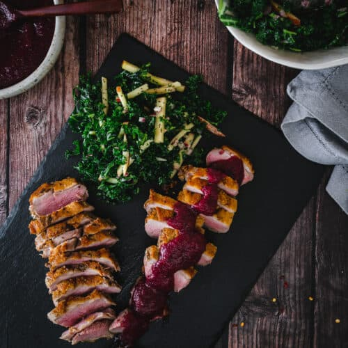

This dish is a sophisticated and romantic pairing that highlights the rich, gamey depth of the perfectly seared duck. The star is the duck breast itself, cooked until the skin is intensely crispy and golden while the meat remains tender and flavorful. It is elegantly balanced by a sweet and tangy berry apple compote, which cuts through the richness of the meat. Served alongside a fresh Kale and Apple Salad, the meal offers a formidable combination of warm, savory poultry and bright, fruity acidity.